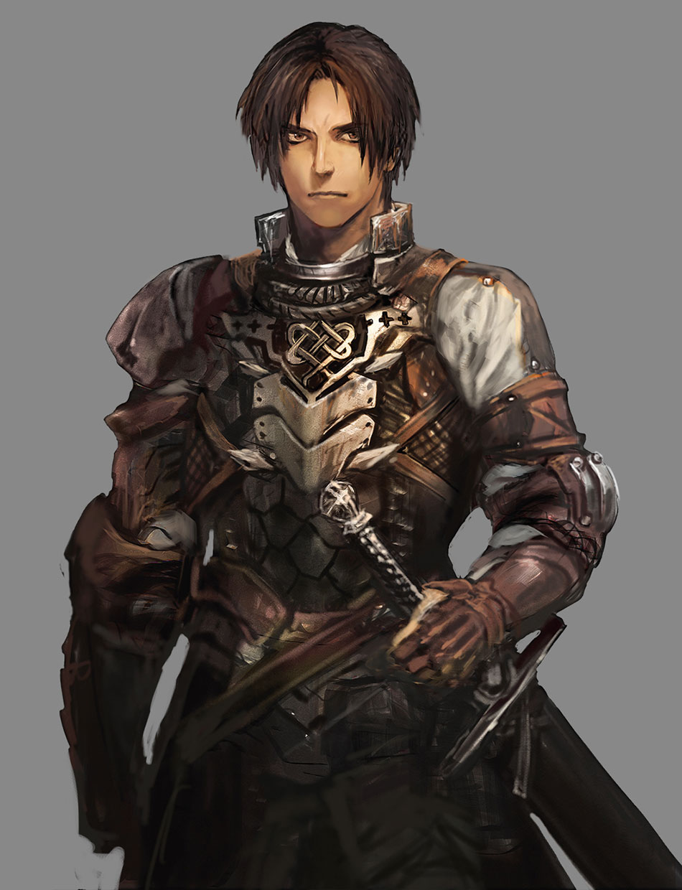
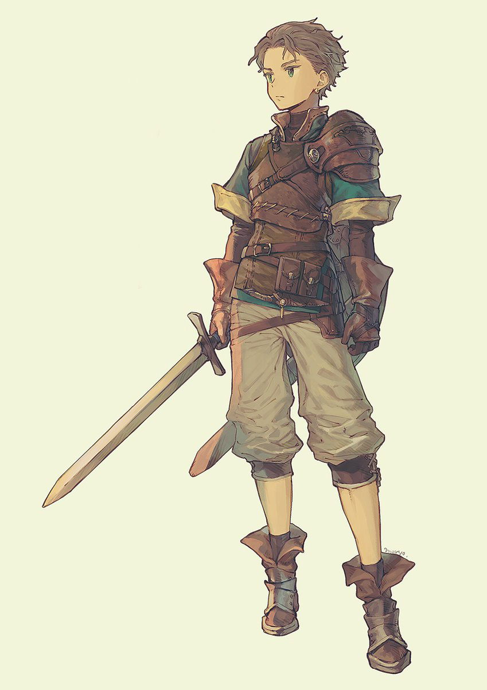
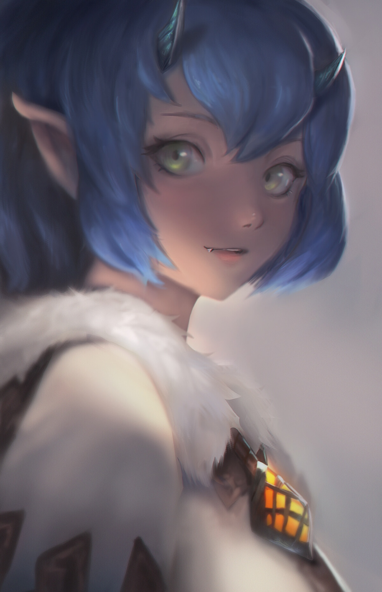
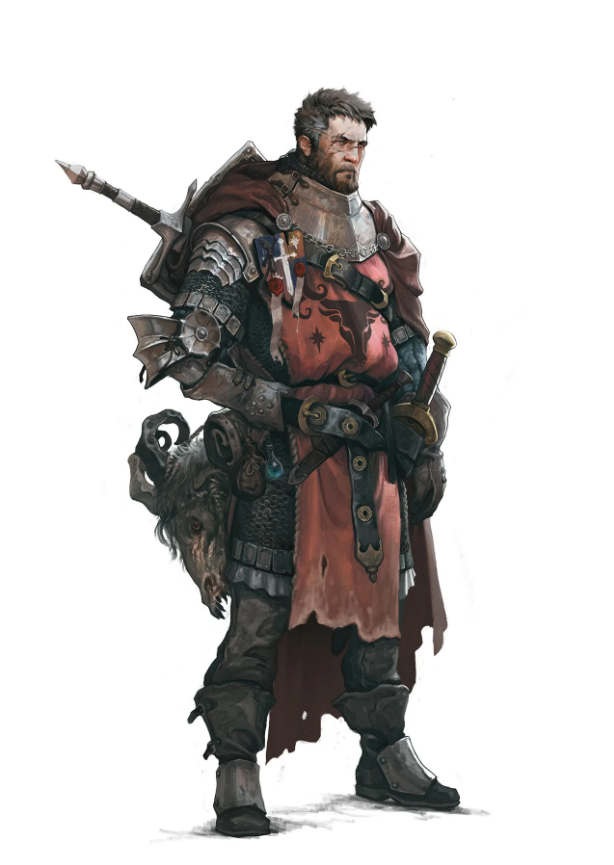
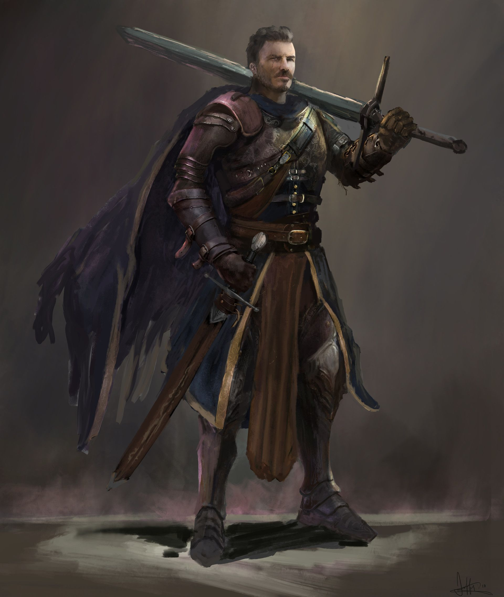
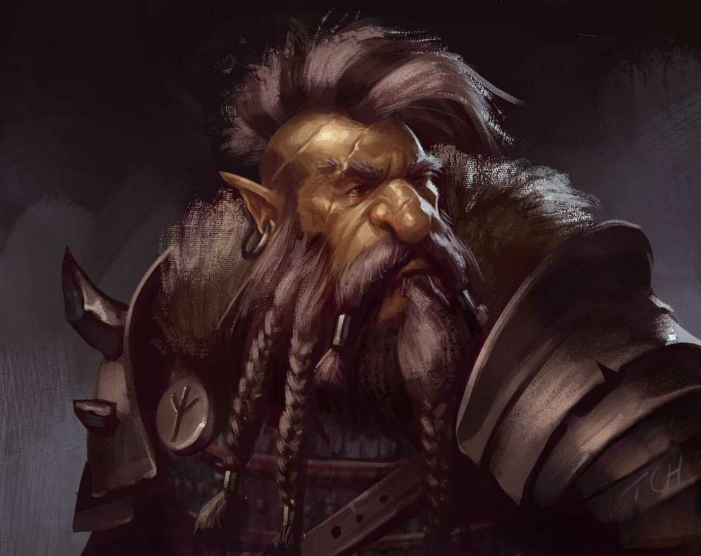
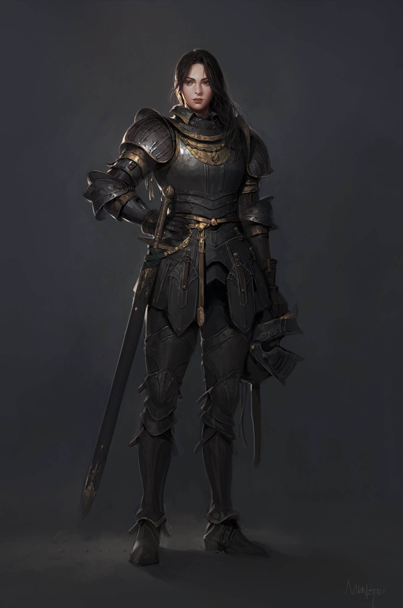
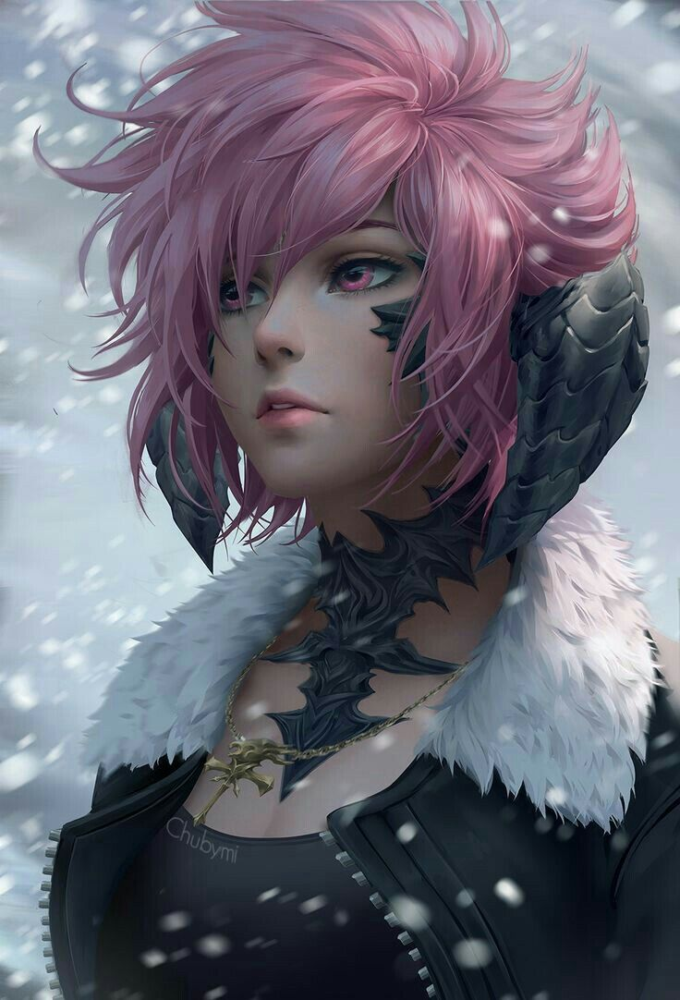
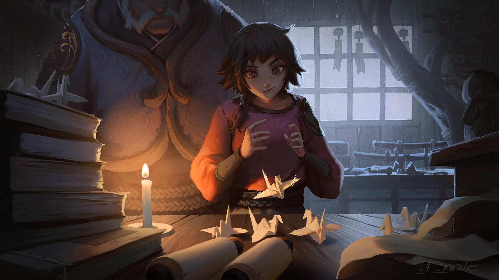
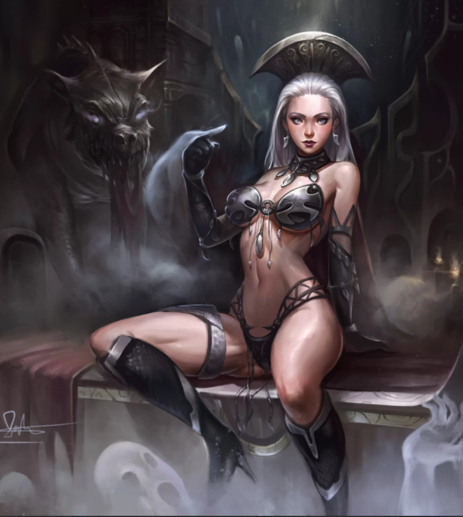

Эмпир Шейн Норфаус
Отец Шейна погиб в пожаре, а мать была изнасилована и скормлена свиньям во время междоусобиц в королевстве "Грестоль". Постоянные войны с другими королевствами, каждодневные междоусобицы, нехватка продовольствия и адские условия жизни сильно били по психики мальчика. Единственный, кто у него остался, так это Брикс, старый друг его отца. Правда, заботился о нём он не долго, так как Шейн сбежал из города "Акристолько" в кровавые земли. Вернулся в родные края лишь спустя 4 года, после своего побега.

Норф
О нём мало что известно, однако за 4 года со своими товарищами смог сильно привлечь к себе внимание. Особенно он отличился на всемирном сражении, вызвав на дуэль Розарию. Победить ему не удалось, но привлечь таким образом к себе внимание влиятельных людей ему явно удалось.

Бренди Сальфия Шэррил
Родилась в королевстве "Сигрей" и принадлежит знатному роду "Грейсий". Ещё будучи ребёнком уже обучалась магии, но за несколько лет ничего путного не вышло, но вот с фехтованием и ведением боя достигла небывалых высот для своего возраста. По достижению 8 лет, была похищены работорговцами соседнего королевства, однако её спас некий авантюрист, который в последствии приютил её у себя дома. Находясь под защитой своего спасителя, она познавала травничество и занималась тренировками с мечом с её спасителем. Через пару лет она стала авантюристом и вместе со своими товарищами путешествует по континентам.

Артен Брикс Фортуан

Грей Сизоро Вольфин
Выходец из благородной семьи "Вольфинов". Политическая сила этой семьи даже выше чем у короля. Мальчик часто устраивал драки, пытаясь показать какой он сильный, по сравнению с другими. Обучался в элитной академии "Вейдлен" на северном континенте, в которую принимают лишь самых одарённых. По достижению 16 лет участвовал в междоусобных войнах и за один год, смог окончить её, за что и получил от короля воинский титул "Адмирал" и право находиться возле его величества. В 29 повстречал на войне прекрасную женщину, которая была настолько грациозна в битве против королевства "Сигрей", что он не удержался и взял её в жёны после окончания войны. На данный момент выполняет роль охотника за головами.

Сигурд Фрейден
Родился в королевстве "Двархист". Является членом забытого рода "Фреид". Его семья из поколения в поколения занимались кузнечным делом и он сам так же этим занимался, так как это уже было традиционным ремеслом в его родословной. Постоянные нравоучения и строгое воспитание сделали из него мастера кузнечного дела, но вот только социальных навыков ему не хватало. В 26 лет был принудительно отправлен на военную службу, так как началась война против 2-ух королевств: "Грестолько", "Тафстен" За несколько лет службы в армии, был унаследован несколькими орденами отличия и своими землями. После окончания войны отправился в путешествие за новыми знаниями.

Вейерштрасс Розария Вольфин
Розария является одной из главнокомандующих армии королевства "Грестоль" Принадлежит к низшим родам. Часто попрошайничала на улицах и участвовала в незаконных деяниях, из-за чего была отправлена в темницу, а через 8 лет была отправлена на войну как пушечное мясо. Благодаря активным действия на войне против королевства "Сигрей", смогла привлечь внимание высокопоставленных к королю адмиралов, что и сыграло свою решающую роль в становлении главнокомандующим и снятии всех обвинений против неё.

Мэрела Гризельда Эрдеш
В 16 лет после смерти отца получила в наследство много денег. В 20 лет начала открывать по западному континенту гильдейские здания, предназначенные для размещения и выполнения разнообразных поручений. Сейчас является главой гильдий приключенцев западного континента.

Тересса Аппель
Выпускница академии "Зэлтон", расположенный в королевстве "Дфархист". Обычно людей, да и другие расы они не принимают, а с учётом того, что недавно "Грестолько" воевала с "Сигрей", они и вовсе хотели запретить людям из королевства "Грестолько" возможность обучаться у них, но для неё сделали исключение, при условии, что она пройдёт самый сложный тест, который они могут дать поступающим. За 5 лет учёбы, она многих переплюнула по мастерству, практически сравнявшись с лучшим учеником "Сигурдом", который давно у них обучался. Сейчас она является одним из владельцев всех мастерских в городе "Меритон", который является крупным торговым портом.

Альфина
Таинственная женщина, которая частенько можно встретить по ночам в лесах возле королевства "Грестолько". Все, кто её видел описывали её так: Высокая и статная женщина, одетая в довольно откровенный наряд. Волосы её белы, а цвет глаз кроваво-красный.